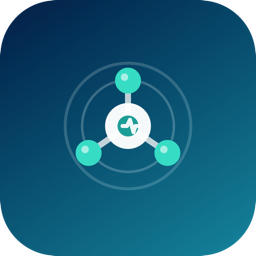

NetDoctormacOS 14.0+
Understand your connection.
Inspect your Mac’s network state and get practical next steps without changing network settings.
What it does
- Wi-Fi, Ethernet, DNS and route information
- Internet reachability and local diagnostic history
- Export a redacted support package yourself
Before you start
Read-only diagnostics, not automatic repair or a VPN service. Connectivity tests contact public endpoints. Results describe the sampled connection and do not guarantee that every service is reachable.
Use the Mac App Store listing for purchase, downloads, updates and current pricing.
NetDoctormacOS 14.0+
看清网络连接的问题。
检查 Mac 网络状态并获取排查建议，不修改网络设置。
可以做什么
- Wi-Fi、以太网、DNS 与路由信息
- 互联网连通性与本地诊断时间线
- 主动导出脱敏支持包
使用前了解
仅提供只读诊断，不是自动修复或 VPN 服务。连通性测试会访问公开端点；结果反映采样情况，不保证所有服务均可访问。
购买、下载、更新及当前价格请以 Mac App Store 页面为准。